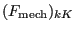

Next: Three-node shell element (S3)
Up: Element Types
Previous: Six-node wedge element (C3D6
Contents
The C3D15 element is a general purpose wedge element (9 integration points). The shape functions can be found in [1]. The node numbering follows the convention of Figure 69.
Figure 69:
15-node wedge element
|  |
The element behaves very well and is a good general purpose element,
although the C3D20R element yields still better results for the same
number of degrees of freedom. The wedge element is often used as fill
element in ``automatic'' hexahedral meshers.
guido dhondt
2018-12-15